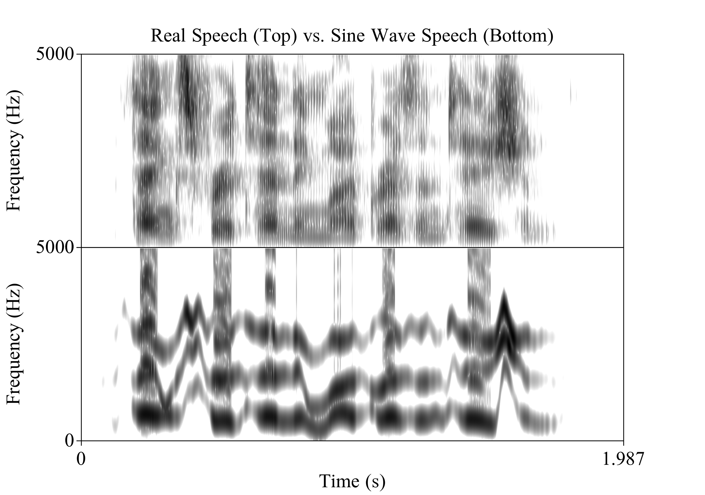
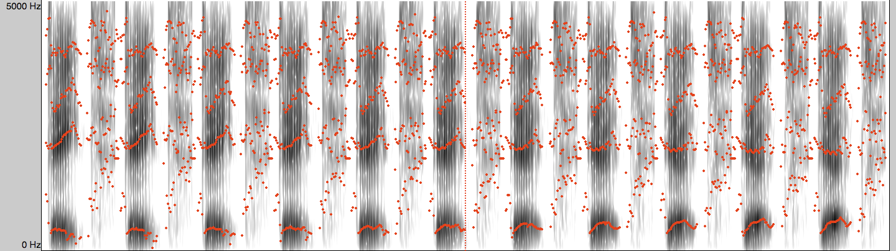
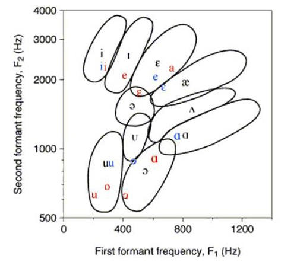
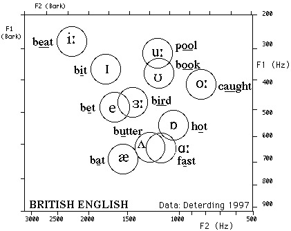
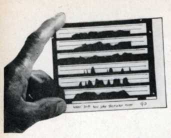
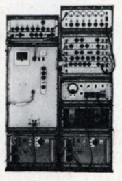
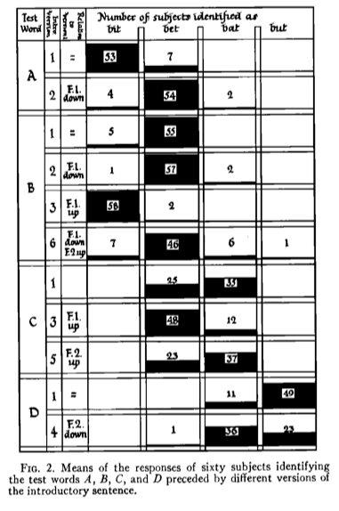
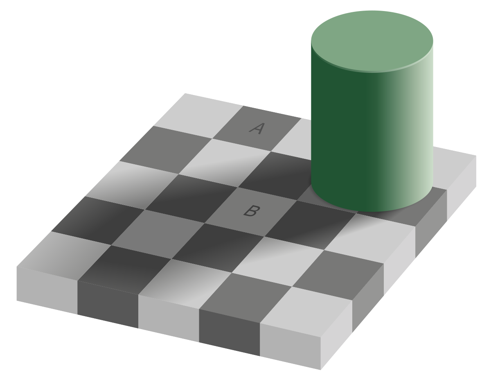
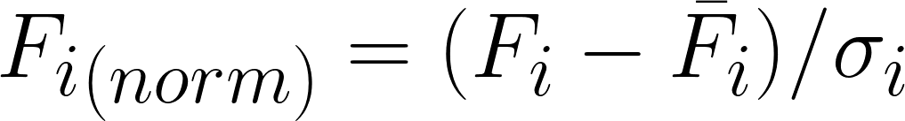

F1:
F2:
F3:
Combined:
Original:
Different American English vowels, as spoken by a male speaker
Date:
Debt:
?:
??:
???:
The first and last sounds have formants like the typical English /eɪ/ and /ɛ/vowels







Ladefoged and Broadbent 1957
Six versions of an introductory sentence were synthesized, each with different formant structures
Four test words were synthesized as well
Listeners heard different combinations of test words and sentences
If vowel perception is about absolute frequencies, the prior sentence shouldn’t matter!
They had to paint what they wanted on glass

| Then feed it into an analog sound synthesizer |
|  |
Stimulus #4:
Stimulus #5:
Stimulus #6:

“The linguistic information conveyed by a vowel is largely dependent on the relations between the frequencies of its formants and the formants of other vowels occurring in the same auditory context”
We’ve got two main theories!
Normalization is a process that “happens”
You meet somebody, you create a model of their vowel space, and you move on
These models of speaker vowels are maintained in memory
One model per person, and a new model each time!
We store information from every vowel we hear!
Normalization is then just bulk comparison and probability
* Vowel identities are probabilistically determinedOne might start with an “English” vowels model
Then, you build a per-speaker exemplar cloud
Both your per-speaker and overall models change

It’s not just about the point vowels (/i, a, u/) as Joos suggested (Verbrugge et. al. 1976)
Context influences Normalization (as in Ladefoged and Broadbent)
Knowledge about the speaker (gender, sociolinguistic data) influences normalization (Strand 2000)
Recent context might be more important than older context (Ciocca, Wong, et al. 2006)
The normalization process shows up in reaction time during vowel identification tasks (Haggard and Summerfield 1977)
Breath sounds don’t provide good information for normalization, and F0 isn’t a critical factor (Whalen & Sheffert 1997)
More context seems helpful, but only to a certain point (Kakehi 1992)
We have to normalize consonants too
Vowel nasality appears to require normalization too (Styler 2017)
Infants can normalize to vowels (Kuhl 1979)
So can dogs (Baru 1975) and Zebra Finches (Ohms et al 2009)
These finches are a major problem.
Other animals show awareness of vocal tract size differences
“Attributing variation to cause” is something we’re generally good at

|  |
|---|
“OK, OK, we get it. Nothing’s real. Everybody varies. Speech study is impossible. Let’s change to syntax.”
“Various algorithms have already been proposed for this purpose. The criterion for their degree of success might be that they should maximally reduce the variance within each group of vowels presumed to represent the same target when spoken by different speakers, while maintaining the separation between such groups of vowels presumed to represent different targets.” (Disner 1979)
Allows for more principled across-speaker comparison
Statistical in nature, rather than contextual or “linguistic”

σ is the Standard Deviation of all tokens around the vowel mean
Done for each formant, for each vowel
Leaves you with formant points for each token which are more comparable across speakers
This can be done on your own, or using NORM or vowels() in R
It reduces across-speaker variability, but doesn’t remove it completely
The end results are suitable only for rough comparison among speakers
The resulting numbers are abstractions
Disner finds these algorithms good within language
But for cross-language analyses, things get dangerous
Don’t pretend it’s solved the problem!
Formants (F1 & F2) are the primary means of identifying vowels
Vowel charts, although well-intentioned, are dirty, dirty abstractions
Vowel perception is complicated by the enormous variation between speakers and tokens
Phonology, Context, and Secondary Cues help to make things perceptually easier
There’s not a strong consensus on how exactly we normalize across speakers
Vowel perception is basically magic
http://savethevowels.org/talks/vowelperception_advanced.html
Baru, A. V. (1975). Discrimination of synthesized vowels /a/ and /i/ with varying parameters (f0, intensity, duration, # of formants) in dog. In G. Fant, & M. A. A. Tatham (Eds.), Auditory Analysis and perception of speech. New York: Academic Press.
Ciocca, V., Wong, N. K. Y., Leung, W. H. Y., & Chu, P. C. Y. (2006). Extrinsic context affects perceptual normalization of lexical tone. The Journal of the Acoustical Society of America, Vol. 119, No. 3, 1712-1726.
Charlton, B. D., Ellis, W. A. H., Brumm, J., Nilsson, K., and Fitch, W. T. (2012). Female koalas prefer bellows in which lower formants indicate larger males. Animal Behaviour, 84(6):1565– 1571.
Disner, S.F. (1980). Evaluation of vowel normalization procedures. The Journal of the Acoustical Society of America, Vol 67(1), 253-261.
Joos, M. (1948). Acoustic Phonetics - Supplement to Language. Baltimore: Linguistic Society of America.
Ladefoged, P., & Broadbent, D. E. (1957). Information Conveyed by Vowels. The Journal of the Acoustical Society of America, Volume 29, Number 1, 98-104.
Lobanov, B. (1971). Classification of Russian Vowels Spoken by Different Speakers. The Journal of the Acoustical Society of America, 49(2B):606–608.
Ohms et al. Zebra finches exhibit speaker-independent phonetic perception of human speech. Proceedings of the The Royal Society of Biological Sciences (2009)
Rositzke, H. A. (1939). Vowel-Length in General American Speech. Language, Vol. 15, No. 2, 99-109.
Verbrugge, R. R., Strange, W., Shankweiler, D. P., & Edman, T. R. (1976). What information enables a listener to map a talker’s vowel space? Journal of the Acoustical Society of America, Vol. 60, No. 1, 198-212.
Whalen, D. H., & Sheffert, S. M. (1997). Normalization of Vowels by Breath Sounds. In K. Johnson, & J. W. Mullenix (Eds.), Talker Variability in Speech Processing (pp. 133-143). San Diego, CA: Academic Press Ltd.